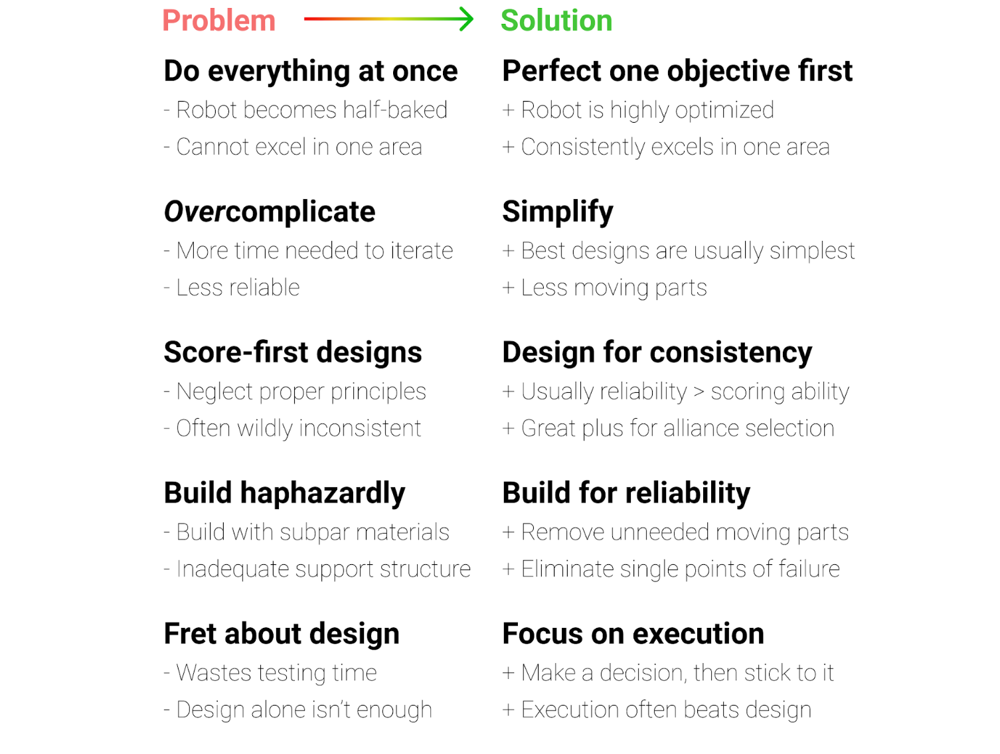

Rookie Mistakes: Principles¶
Do Everything At Once → Perfect One Objective First¶
A common pitfall for first year teams is trying to accomplish all the game objectives at once, especially in tele-op and endgame. This is highly discouraged because oftentimes new teams may not have the experience to do so. Too often, we see teams bring half-baked robots that will attempt to do everything in a match, but excel at nothing. This robot could be much more successful if the team spent their time to perfect one mechanism first. Teams should always remember the principle that a robot that can complete one thing consistently will likely be more competitive than the robot that does everything inconsistently. We recommend teams focus on one objective during tele-op/endgame and perfect it.
Typically, teams which have a solid autonomous and consistent endgame can be competitive at the Qualifier level, and this is a recommended goal for new teams.
Overcomplicate → Simplify¶
Another common trap that teams fall into is to overcomplicate needlessly. Simplicity and compactness are two hallmarks of engineering. While some robots are very complicated, keep in mind that those teams are generally experienced. However, many world-class teams often build designs that are ingenious yet ridiculously simple. Some advantages to simplicity are that the robot usually has less points of failure, given that the robot has less moving parts. Additionally, it takes much less time to iterate through and perfect a simple mechanism as opposed to a complicated one. Keeping things simple can be achieved through a couple of ways. First, try to limit the degrees of motion that the mechanism operates in. For example, a linear slide goes in and out in a straight line, as opposed to an arm, which rotates along an axis. Doing so will serve to eliminate forces that otherwise could adversely affect the mechanism. Another way to simplify is to build for the shortest travel distance. Obviously, the shortest distance from A to B is in a straight line, so teams should strive to keep the game elements approximately within a reasonably straight line. This can help in solving possible problems if the game elements need to change direction too many times.
Score-first designs → Design for Consistency¶
Teams should prioritize consistency over scoring ability. The tortoise beats the rabbit. An overused parable, but it still holds a kernel of truth. Why? Because the tortoise, which plodded along consistently, beat the rabbit, which had hot and cold streaks. A hallmark of any successful team is consistency and reliability throughout the competition season and even across seasons. Without the power of consistency, it will be nearly impossible to win games, let alone a tournament. Too many teams fall into the pit of prioritizing scoring ability more than anything else, which is a grave error. In keeping with the first tip, to perfect one objective first, this practice will serve to increase consistency. While scoring ability should be a priority and objective when designing mechanisms, it is not everything in this game. We advise being consistent at low and medium scoring levels than inconsistently scoring at a high level. Focus on being able to do that one thing every single time throughout your matches, and you will begin to see how important consistency is. This tip is equally as important during alliance selections. Top teams will prioritize teams that are consistent far more than scoring ability. They are not afraid to look at teams who can’t score much, but can contribute every time to the alliance score, rather than selecting a boom-or-bust pick.
Todo
link to materials guide, wiring section
Build haphazardly → Build for reliability¶
When building, teams often overlook a key principle: build for reliability. All too often, teams skimp on the quality of construction as well as materials, which leads to one of the most common reasons for broken robots: part failure. Teams also do not take into account the rigors of competition and build as if the robot will not encounter opposing robots. Sufficient driver practice will be able to better simulate in-game conditions and test the reliability of the robot. To remedy this problem, refer to the Materials Guide to gain a better understanding of what materials are recommended for use. In addition, teams often forget to account for twisting or compression forces that may occur upon the mechanism. While we cannot give any specific recommendations, do keep in mind what forces the support structure of your mechanism must bear along the full range of motion, and account for what occurs when it might hit another robot/field wall/field. Building more robustly is always worth the time spent. Furthermore, a common cause of robot disconnect is wiring issues. Refer to the Wiring section for more information; in short, make sure to plan ahead and leave space for wires, and use strain relief whenever possible. All these tips combined will help your robot become more reliable, a key characteristic of all world-level robots.
Fret about Design → Focus on Execution¶
A good execution of a bad design will beat a bad execution of good design. FTC is all about how well you execute in both the mechanical aspect and the driver aspect. It is very possible to take a bad design, execute it well, and still be competitive at a high level. Even though not many teams are able to do so, it still goes to show that the method of implementation is very important. When brainstorming designs, try not to get hung up on small details. It is important to discuss different designs and debate the pros & cons, but after a design has been picked, stay with it unless there are major flaws that were originally overlooked. Changing designs will throw away the time spent on the original design, when teams could have kept improving it or practiced more. It is possible to rebuild your robot mid-season, and many top teams have done so to great success. However, this is not recommended for rookie and new teams due to the general lack of experience. Focus on how you can implement your design to be as effective, efficient, and refined as possible, instead of “what if I did this?”